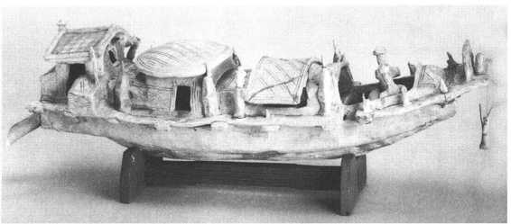
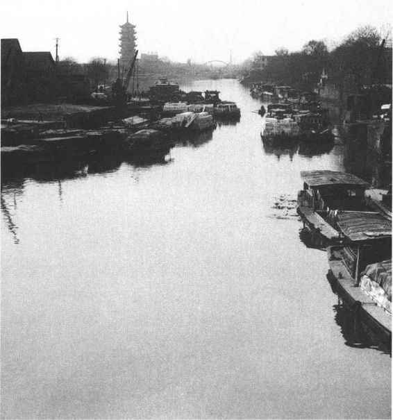
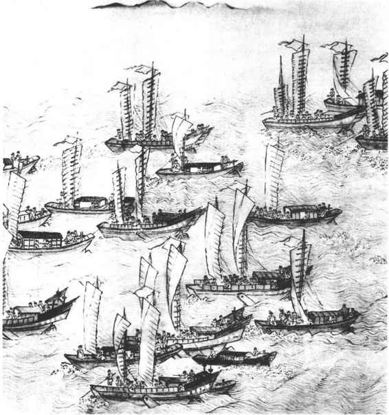
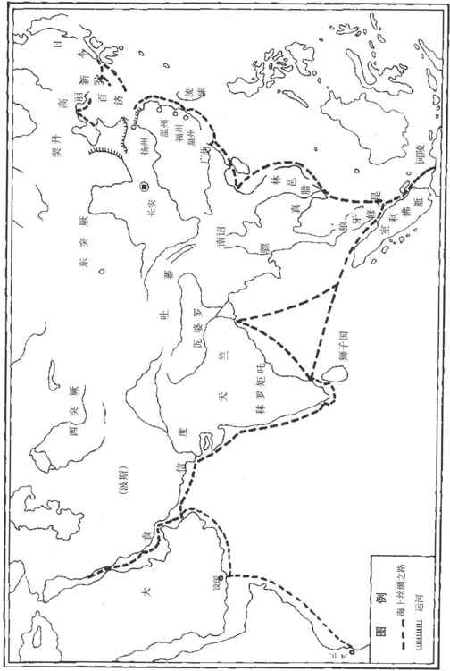
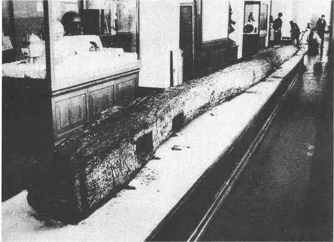

自古以来，中国大地上江河东西奔流，湖泊星罗棋布，为捕捞、灌溉和交通运输提供了极大的方便，也是经济发展的重要资源。中国古代的水上交通是比较发达的，内河航运和航海技术都曾走在世界的前列。
中国古代社会的交通，北方习惯于车马，南方则盛行舟楫。造船工业在长江流域率先发展，是地理环境所决定的。
距今六七千年前的浙江余姚河姆渡遗址中发掘出的大批黑色陶器和磨制石器、骨耜及工艺品，显示了氏族成员开拓杭嘉湖平原的不朽业绩。遗址中出土的一柄木桨，柄叶连体，保存很好，是当时已有舟楫之便的可靠证据，也是长江下游一带造船业的最早产物。
在靠近大陆的沿海岛屿上，近年来存不断发现的新石器时代遗址中，虽然尚未发现当时人类渡海的船只等，但岛上的遗迹和遗物亦足证远古先民从大陆乘舟浮海的事实。河姆渡的船桨肯定不是孤立和偶然的现象。新石器时代在黄河流域造船工业也出现了。宝鸡北首岭遗址出土的仰韶文化船形彩陶壶，既表现出高超的制陶水平，也表现出造船工业已颇具规模了。
到商周期时代，造船工业愈益发达。在甲骨文和金文中，关于船的记载很多，舟字就是刻画一条船的象形字。从甲骨文的舟字可以看出，商代的舟已经注意到船舱内的不同结构，而且船只已经有多种形式了。
春秋战国时期，文献中关于舟船的记载更多。特别是长江流域，各民族之间的往来，诸侯间的征战，不绝于书。楚威王、顷襄王时期，派将军庄跻率领水军循长江而上，攻占了四川和贵州以西的地方，兵锋直抵滇池一带，后来楚败于秦，秦修筑五尺道从汉中通巴蜀，有效地控制了西南地区。长江下游缺乏建造大船的木材，战国秦汉各时代多取湖北江陵的木材造船。《史记》说，江陵大木所造的船只“一船之载当中国数十辆车”。
地处长江中下游的楚、吴、越和黄河下游的齐国，不断互相攻掠。在大规模的战役中，舟师经常遍布江河，甚至绕取海路。由于南方河湖较多，战斗时而在陆地，时而在水上穿插进行，所以陆路行军大多和水军配合前进。那时，水上交通工具除了一般的船只外，还有称作“方”的方形船，后称为舫。还有一种称作“刀”的小艇。《诗·谷风》有“就其深矣，方之舟之”；《诗·河广》有“谁谓河广，曾不容刀”等句，说的即是方、刀在河上航行。也有普通的扁舟，越王句践雪耻吴王夫差之仇后，越国谋臣范蠡便退隐世间，“乃乘扁舟，浮于江湖”。还有用竹、木编成的各种筏子，称为桴。
战国时期，张仪游说于楚，说道：“秦西有巴蜀大船，积粟起于汶山，浮江而下，至楚三千余里，舫船载卒，一舫可载五十人及三个月的粮食。顺流而下，一日可行三百余里，里数虽然这样多，却不费牛马之力，不至十日而抵扦关。”从这段话中，可了解到那时江上航行的速度和负载的重量，已十分可观。
1935年在河南汲县山彪镇一号墓里获得的水陆攻战纹铜鉴和1965年四川成都百花潭中学战国墓中出土的带有水战图像的铜壶，刻画出的战船十分具体而生动，是战国早期造船工业的写照。山彪镇铜鉴画面完整清晰，左右相对驶来的两艘战船形制相同，都是船身修长，首尾翘起，分作上下两层。战士在上面，击棹的水手在下面。这种战船没有风帆，完全靠人力划桨作为动力，也没有尾舵。伍子胥曾向吴王阖闾讲述，仅战船就有大翼、小翼、突、楼舡、桥舡等多种。《越绝书》记载，大型战船“大翼”，可乘坐90人左右。其中约三分之二的人是驾驶船只的，仅击棹一项就需要50人，其余是战斗人员。《墨子·备水》讲到较小的战船，所乘30人，大概既要击棹行船，又要进行战斗。
统一后的秦王朝为了加强对长江流域的控制，大力发展造船工业和训练水军，同时扩大漕运。在《淮南子》、《史记》和《汉书》中，都有秦军在统一岭南的战役中大量使用船只、调动舟师的记载。当时的水军已经拥有克敌制胜的楼船，又用军队开凿了灵渠以解决粮草的运输问题。
目前世界上发现最早的独木舟是在大西洋东岸、西欧北部的荷兰境内，碳14鉴定为公元前6250年左右。但在中国西南地区，古代的独木舟遗存却构成了独特的文化现象。考古调查和发掘表明，在四川的广元、巴县、奉节、新都、蒲江、成都、绵竹、双流、郫县、巫溪、大邑、宝兴、广汉、绵阳、彭县等地，都发现大量汉代以前巴族和蜀族的独木舟制作的“船棺”，其规模和形式都是世界罕见的。1975年，在云南楚雄万家坝发掘了一大批距今约2500年滇王国的墓葬，许多葬具是用圆木制成的有盖船形棺和无盖独木船形棺。汉代以后，随着汉文化的传播与影响，四川巴蜀民族的独木舟文化日趋消失，但在云南、贵州、广西地区一些少数民族中历代延续至今。现代云南省泸沽湖纳西族摩梭人制作的独木舟，有几种不同的形式，基本上反映了独木舟向复合式木船发展的轨迹。另外，四川地区地形复杂，出门旅行常需水陆兼程，车马和舟楫都是不可或缺的，独木舟与竹、木制筏与排是民间主要交通工具。
汉代的造船工业比秦代以前有明显发展，不仅楼船大批出现，而且在船上普遍安装了甲板、桨、橹、帆、舵和锚等等，可以说基本上具备了现代船只的设备。汉代的划桨船既使用短小的楫（手持短桨），也使用了在舷上有固定支架的长桨，这样可以使船夫用全身的力气划动较大的桨。汉代还创造出了另一种效用更高的工具——橹。这种划船工具装在船的尾部，操橹人只要掌握橹片的角度，左右挥动，就可以推动船只前进，同时还能控制船的方向。
帆，最初在什么时代产生的尚无确证，但至少在汉代已经应用于内河航运了。《太平御览》卷七七一录《南州异物志》载，三国时航行在中国南海上的船只已“随舟大小或作四帆，前后沓载之。有卢头木，叶如牖，形长丈余，织以为帆。其四帆不正前向，皆使邪移，相聚以取风吹”。从这段话可以看出，那时的使帆技术已相当高明。船帆不仅可以转动以适应不同的风向，而且船夫可以随风力的大小增减帆数。
船在逆风行驶时要采用“之”字航线，航行中遇到障碍物也需改变航向，因此利用舵来准确地操纵航向，是船舶工业发展中的一件大事。东汉刘熙著《释名》一书中就有关于“舵”的记载和解说，称之为“拖”，是使船只的前进方向不发生偏差而用的，“拖”即在船尾拖曳的意思。广州市郊东汉墓中陶船的尾舵，证实了上述记载是可靠的。这只陶船还悬挂着锚，不仅有锚爪，而且有横杆，可使锚爪迅速插入河底泥中。这种具有较大抓力的锚，已经脱离了锚的初期形态，很接近近代的船锚了。
汉代的船只种类很多，大体上可分为军用的战船和民用的客船、货船几类。（图23—19）战船中出现了突击用的“先登”，船体狭长以利冲撞敌阵的艨艟。还有漆成红色行驶迅捷的“赤马”，上下两尾的舰和高大坚固的楼船等等。客船和货船常以载重量来区分。运载300斛的称为，较短小；再小的200斛轻舟则称为艇，小艇只能容一二个人乘坐。

图23-19 广州东汉墓出土的陶船
楼船早在战国时期就已出现，汉代更有所发展。它已不仅用于水战中的指挥，而且也是达官贵人喜欢乘坐的一种大船，一般有三层楼舱。汉武帝的楼船高十余丈，公元前113年，他乘坐自己的楼船巡游汾河，与群臣在舟中宴饮，可见船体是十分高大宽敞的。
秦汉时期的造船工业当时已处于世界领先地位。四面环海的英国直到13世纪才制造出在船首和船尾建楼的船，并最早出现于欧洲。多桅帆船直到15世纪才在欧洲出现，而可以转动的纵帆在欧洲出现也是在公元7世纪以后。
广州的造船工业是江南的中心，不仅可以制造多种类型的运输船，还可以制造精美的游艇和客货两用船。1956年在广州的西汉古墓中出土了一件木质船模型，长80厘米，宽41厘米，深11厘米，船底水平部分长34厘米，两端翘起。船的中部有两个舱，前舱方型，上面有方型盖板为顶，左边开一个方形舱门。后舱稍矮一些，长方形，篷盖为两坡式。船首舱内横架两块木板当坐凳，上坐四个木俑，各持一支短木桨。船尾舱内也有一个木俑坐在凳子上，所持木桨稍宽，看来是掌舵的。从这只木船的形制看，应是一只内河航运的小型客船或游艇。1955年在广州的东汉墓中曾发现了一件陶制的船，制作十分精巧，长56厘米。船的尾部有望楼。船首处两舷各设有三个桨架，船上有六个陶俑。船尾有舵，船首还吊着一只锚。按比例估计这只船长二十米左右。是内河行驶的客货两用船。
湖北、湖南、江西、福建和江苏的造船工业也比较发达，除了官营的船场外，还有大量民间造船专业户制造小型船只、木筏和独木舟。在福建闽江口以北的连江县浦口乡山堂村，1973年发掘出一只西汉时期的独木舟，是用一棵巨大的樟树干制造的。树干削去约1／3的纵横面，存留着树皮，再挖凿成舟形，实测舟长7.1米，头部宽1.2米，尾部宽1.6米。出土时两侧舷已有残损，近尾部侧弦尚存0.83米高，中部靠近舟尾处凸起一块木座，可能是行舟时掌舵者的位置。近舟首两侧舷各有互相对称的凹槽，显然是放置横板用的。这只独木舟出土于鳌江附近，水上交通频繁，面对着台湾海峡中的马祖岛，古代民间造船业也很发达。
隋唐是中国古代经济发展的一个高峰，也是外交关系极为活跃的一个历史阶段。农业、畜牧业、纺织业、陶瓷业、金属冶炼和加工等生产均有大幅度的发展，文化教育、医疗卫生事业的成就也很突出。这一切使具有三千年文明的唐帝国在世界上享有很高的威望。尤其是到唐玄宗开元年间，中国的发展使域外各民族十分神往。在这种形势下，造船工业也有更大的发展。
史载隋炀帝乘着高大的龙船游幸江南时，“舳舻相接，千里不绝”，虽然是夸大之辞，但其船队的浩荡是可以想见的。炀帝伐高丽，亦称“舟舻千里，高帆电逝，巨舰飞云，横断沮江”，可见当时航运之规模。
唐代已经能造出中国最早的轮船了。有一个叫李皋的人，善于研究制船技术，曾运用巧思制造了一种战船。舷侧装置二轮，在船上用肢踏动机关，驱轮转动，乘风破浪，飞快的速度如同扯起了顺风帆。这种用简单的动力带动水轮的机械原理，使造船工业有了重大的革新，从而推动了宋代造船业的进一步发展。
1973年，江苏省如皋县蒲西乡的马港河畔，发现了一只唐代木船。木船从青灰色的淤泥中被发掘出来时，船首部分已有损坏，船尾残缺，一部分船舷和船底的木质腐朽，船舱盖板也多不存在，但船身、船底以及船舱隔板大部分完好。现存船身实长17.32米，船面最窄处1.3米，最宽处2.58米，舱深1.6米。整个船身用三段木料榫合而成，形状细长，头尾部稍狭窄，船底横断面呈圆弧形。船舷板厚4厘米至7厘米，船底板厚8厘米至12厘米，是一只内河航运的船。
从整个船的结构看，船身窄而长，隔舱多，容积大。船舱及底部均用铁钉钉成人字缝，其中填以石灰和桐油，严密坚固。舱面覆盖着木板和竹篷，单桅杆。这种船的速度较快，便于在江面上行驶。根据其长宽和泞度计算，这是一只载重约二十吨的运输货船。当时，中国沿、近海有四大船型：沙船、乌船、福船、广船。这只船属于沙船，底平，吃水浅，顺逆风均能行驶，盛产于江苏一带。
由于造船业的迅速发展，江南一带河湖港湾到处可见各种船只。重要的港口城市则帆樯如林。唐代宗广德元年（763）十二月，“鄂州大风，火发江中焚船三千艘，焚居人庐舍二千家”；大历十年（775）秋七月，“杭州大风，海水翻潮，溺州民五千家，船千艘”。类似记录很多，说明长江流域的船只数量是相当巨大的。除了各类船只，民间还生产数量更多的竹筏和木筏。唐僖宗广明元年（880）二月，黄巢军队“自桂阳编木为筏数千。其众乘暴水船沿湘而下，径自潭州，急攻其城，一日而陷”。紧接着黄巢又派遣尚让乘筏沿流而下，进逼江陵。这件事表明民间以竹木为筏省工省时，花费不多。筏在水上交通方面的功绩实不可没，直到现代仍为水上居民所喜爱。
宋代的造船工业分官营和私营两类。私营造船分布广泛但规模都很小，没有留下多少文献资料。官营造船业则比唐代更为发达，造船场的工匠包括“诸州杂犯配军”和长期佣工、兵士及民间临时调的工匠等等。在各地船场内都制造内河漕运船，沿海地区船场还制造大型海上运输船。北宋时期制造的漕运船只数量很多，到了南宋，由于战乱和南北交通阻断，漕运船产量下降，战船的数量和质量都有一定提高。北宋真宗末年，漕运船年产量将近三千艘，其中江西的造船业产量最多。到了北宋后期，浙江的漕运船产量跃居第一。南宋时，福建沿海的私营造船业发展十分迅速。
广东的造船工业在唐代以后持续发展，宋朝时仍负盛名。福建的造船工业在宋朝成为一个中心，泉州成为著名的港口城市，泉州制造的海船深受中外商旅的欢迎。泉州南门外后渚港附近的乌墨山沃、鸡母沃等地，曾出土船桅、船板、船索和船钉等物，证明这一带当时是修造船只、停泊海船的地方。1973年后渚港发现的一只保存完好的宋代海船，为人们提供了难得的证据。
后渚港位于泉州市东南十公里，这里水深港阔，水陆交通方便，经济腹地宽广，便于海船的停泊与起航，是泉州湾内的一个天然良港。这个港口宋代时属临江里，据记载是外商聚居的地点之一。发现的海船沉没在后渚西南海滩一带的一条小港道边缘，开始只发现部分船侧木板暴露，船体几乎深埋在海边淤泥中。海船发掘出土后，虽然甲板以上的结构已破坏，但甲板及以下的船体保存较好，特别是船身中部底板、舷侧板和水密舱壁、舱底座等都没有多大残损。整个海船存长24.2米，残宽9.15米，结构为尖底、尖头、方尾，船身扁阔，平面近似椭圆形，与如皋发现的唐代木船大不相同。舷侧为三重木板，船底为两重木板，一共有13个船舱。根据上述情况计算，载重量应当在200吨以上。
这艘海船的龙骨为两段松木接合制成，连接龙骨的柱是长4.5米的樟木。船板都是柳杉制成，保存较好，纤维的纹理清晰可见。船板上下左右的连接大都彩榫合的办法，缝隙则塞以麻丝、竹茹和桐油灰捣成的黏合物，并用铁钉加固。各舱的隔板和船底板的交界处都装置抱梁肋骨，用樟木制成。第一舱保存有头桅底座第六舱保存着中桅底座船舵是中国古代海船的传统结构。
1994年，在浙江省宁波市象山县的涂茨镇以东后七埠村南海滩，发现了一条明代的海船。这条古船沉没在海泥堆积层中，其东南二百多米是一个良好的避风海湾，濒临的大目洋，潮水可以直冲沉船处。这一带过去曾发现过古代沉船，调查表明后七埠村周围原为海水覆盖，后因长年淤积，地表缓慢上升，海岸线外移，并与近海的塘西木岛连成一片，形成现在的海滩。这条明代海船为木帆船，出土时上部结构已损坏无存，船首也有残损，其他部分则基本完好。船形为尖首方尾，尾部出艄呈燕尾状，残长23米余，宽5米，船板用材均为杉木，质地坚硬。在板材接合缝内用艌料填塞，水密性非常好。这些艌料是以麻丝、桐油、石灰制成的混合物，船板之间还用铁钉钉联，凡有钉眼处均用油灰艌料封实。船体用12道隔板分隔成13个舱位，第一舱最长，为2.3米，第十二舱最短，仅1.14米。有两根“龙筋”穿过第3至第12号隔舱板，在右舷船板外侧还发现一段整根杉木制成的护舷木，这些都是为了加固和保护船体的构件。根据木帆船的各种结构数据测算，载重量约为42吨。船内出土遗物有瓷碗、碟、瓶、罐及木器和棕缆绳等。
除了官营和民间的造船业以外，长江流域和华南广大地区的水上交通还盛行竹筏、木筏和皮舟等工具。隋唐时期，大渡河流域的丹巴、懋功、靖化一带，当地少数民族常以皮舟渡水（《隋书·附国传》）。据《旧唐书·南蛮传》载：“其王所居名康延川，中有弱水南流，用牛皮为船以渡。”类似的记载在历代典籍中屡见不鲜。
综合上述，可以看到中国的造船工业历史悠久，成就很大，不但曾居世界的前列，而且有许多独创之处。例如，设置后舵、舱房互不渗水等等，为世界各民族的交通往来作出了贡献。宋代以前，各种类型的船只结构已经基本完备，此后没有更多明显的创新。明代我国的造船业和航海业都达到了空前的规模和水平，象山海船的造型和结构比宋元时期的中型海船更有其工艺上的先进性，与1984年山东蓬莱出土的元末明初海船大体一致。郑和下西洋的宝船，成为世界造船史上的杰出代表。但是，直到西方机械和动力技术设备的传人，才给中国造船工业以新的启迪和革新。所以，尽管从新石器时代到明清社会，造船工业一直在不断地发展，但是由于历代君主不重视工业技术革新，若从数千年的历史岁月来看，这种发展不能不说是缓慢的。
中国古代的造船工业成就很大却发展缓慢，这看来似乎矛盾的现象正是中国独特的经济生产方式、文化传统背景所决定的。丰富的江河湖泊和漫长的海岸线，勤劳智慧的人民，是使造船工业持续发展的前提。而极度分割的小农经济和因循守旧的思想文化传统则限制着这种工业发展的速度，也妨碍了革新和创造。中国的造船工业就是在这样的前提和背景下艰难地发展着。
从古代造船工业的发展历程可以看到，中国的水上交通自远古时代就已经比较活跃了。古典文献记载，夏代的氏族首领已经善于指挥水上船队征伐四方。《论语·宪问》记孔子学生南宫适的话：“羿善射，奡荡舟”，讲的就是古代流传的一个很著名的故事。后羿率众迁徙到了夏后氏的地域内，因夏民以代夏政，他自己却恃射而不管民事，整天沉湎于在原野上追逐射猎野兽。他宠信善于献媚奉承的寒浞，终至寒浞发动内乱，夺取了夏的统治地位，后羿被杀，妻子也为寒浞所夺。后来，寒浞命他的儿子奡率领水军征伐山东的斟氏，大约在公元前19世纪，善于荡舟的奡大败斟氏，确立了对黄淮地区的统治。
商朝的统治区域远远超过了夏代。商王的子孙，除继位为王和在王室任职的以外，大都被封为诸侯，管理一方。黄河流域的水陆交通在这时进一步发展，水上交通工具基本上由统治者所控制，各地民间的船只木筏以捕鱼和其他水上生产为主。武丁时代，王室的奴隶曾整批逃走。甲骨卜辞里有这样一个记录：武丁下令追捕逃亡者，占卜时预言三天就能抓回来。但是由于奴隶很快渡过了河，追捕的船只未能赶上。直到第15天，武丁派人费了九牛二虎之力才把这批奴隶捉回来。看来，当时的舟船还不多，北方人的操舟技术也还不像江南人那样熟练。公元前1002年，周昭王南征楚地，在兵渡汉水时，因水深流急，操舟者的技术不够熟练，至使昭王的船只在河中沉没，昭王溺水而死。由此可知，北方人是不惯舟楫的。
春秋时期的内河航运比以前繁忙，诸侯争霸，使路上的行人多了。游士说客到各地显露才干以求得赏识，使者和官员不断在诸侯中进行政治外交活动，商人在长途贩运过程中常循水路而行，军队频繁调动以应付各种纷乱的局面和战争，粮食和货物的运输任务格外繁重，流民也不断迁徙以重新寻觅适于休养生息的环境，这一切都促进了交通的发展，水上运输也比西周时期有明显的变化。
据《左传》僖公十二年（前648）载，秦国向晋国运送粮粟，从渭河岸边的雍邑（今陕西凤翔）到汾河边的绛邑（今山西曲沃），浩浩荡荡的船队顺着渭河东下，进入黄河后再转入汾河，共约六七百里的水路。运粮船前后相继，被称为“泛舟之役”，由此可以想见秦晋间的舟楫之盛了。
战国时代，一些学者已经对大陆上的主要江河水系进行过综合研究。根据著名文献《尚书》中的《禹贡》记载，当时人们对黄河流域的山岭、河流、薮泽、土壤、物产、贡赋和交通等，已有较为详尽的记述和讨论。《禹贡》中所描述的古代水上交通系统，既部分地总结出当时的情况，也反映出人们对内河航运的美好构想，对后世有很大的启发。
《禹贡》以夏禹治水的传说为依托，按照夏禹治水的顺序和各地贡赋所行经的道路，把全国分九州。每州内有各自的水道，州与州之间又有彼此相通的水道，从而形成了中国北方庞大的水上交通网。因为夏禹治水主要是在黄河流域活动，所以《禹贡》对淮河、长江流域的记载相对较少。但无论如何，这篇文章反映出中国古代人民建设水上交通系统的理想，代表了人民的殷切期望。
九州方圆，以冀州为中心。八州贡赋所经都以黄河为最大航道。北方数州境内都有黄河的支流相通，南方数州的水道与黄河不通者，则自海入黄河。《禹贡》作者经过一定的调查研究，理想是美好的。虽然实际上未必都行得通，但把这些天然水道系统地描述在一起，则是关于古代内河航运的第一部著作。
战国时期的政治、军事形势和《禹贡》的构想形成了极大的矛盾。各国在陆路、水路交通的许多重要地点筑关设堤，阻塞了不少水道。这种状况直到秦代才有所改善。秦始皇统一六国后，疏浚鸿沟（河南汴河，今已湮没）作为水路中心，远通济水、汝水、淮水、泗水等重要河流。与此同时，下令决通各地许多堤防，并在吴、楚、齐、蜀等地大兴水利工程，使行船和灌溉都收到了显著的效益。
公元前214年，秦始皇征发大军50万人经略岭南，并命令史禄筹划打通运输粮草的水道。杰出的水利专家史禄在湘江上游的江中修筑石堤（在今广西兴安县城东南约三里处），堤形像个巨大的犁头，把湘江分为南北两渠。北渠向北流通湘江，南渠经过兴安县城向西，与桂江上游的大榕江合流。由于南渠所经之处都是高地，史禄用人工开凿渠道，长30公里。渠中设若干个斗门，南北往来船只可以逐斗上进和下降。载重的大船自湘江上溯，通过北渠进入南渠，可以安然过山，运输上省去大批人力。这条渠道是开发岭南的重要航道，从汉唐直至宋明，历代相沿修渠，使航路和农田灌溉愈益完善。史禄为此所创立的功绩深受后人尊敬。因为这条渠道的构思修筑都非常灵巧，所以被人们称为“灵渠”。
汉代的水路交通更为发达。武帝时，关中开凿了许多渠道，漕渠从长安引渭水落花流水东通黄河，便利了漕运，还能灌溉土地万余顷。元封二年（前109）发卒数万人堵塞黄河决口，武帝亲自巡视工地，并命随从官员“自将军以下皆负薪填决河”。从此黄河流归故道，80年未成大灾，对北方的水上运输起了很大的调节和枢纽作用。江南的水路一直比较发达，汉代更加繁忙。宛市（今河南南阳）位于汉水、长江和淮河三大水系之间，与关中地区往来的孔道上，这时已发展成为新兴的重要商业城市；江陵西通巴蜀，东有云梦泽，南方所产犀革、象牙、翡翠、楠木、梓木、黄金等贵重物品吞吐于江陵码头，通过江陵北运长安；吴（今江苏苏州）在太湖岸边，周围河网密布，舟楫如梭，南近杭州湾，北达长江，附近出产的盐、铜、鱼在这里集散。合肥、成都、番禺（广州）等大城市都因水陆交通的发达而成为商业都会。长沙、广州各地汉代墓葬中出土的木船和陶船模型，说明水上交通工具在人们的社会生活中占有非常重要的地位。
东汉的水上交通比西汉时进步不大，水利工程大抵是修复旧渠，少有新创。王莽时（11年）黄河在魏郡决口，河道南徙，改从千乘（今山东利津县）入海，河水侵入当时漕运的要道汴渠。汉明帝擢用优秀的水利专家王景治河。王景发民卒40万开凿山阜，建立闸门，自荣阳至千乘口筑长堤千余里，使黄河与汴水分流，河不侵汴，从此汴渠得到安全漕运，便利了水上交通。东汉末年，曹操为适应军事运输、农田灌溉的需要，大开河渠沟通了黄河、淮河、长江三大水域，使华东的水上交通更为便利。又在河北开凿平虏、泉州、白沟、清河等渠，使中原至天津一带可通漕运。当时的水源取自淇水、滹沱河、沟河及海河水系诸水。这些水源的水位都高出新乡附近的黄河。而且还修建了头堰以雍高淇水截入白沟，所以当时漕运用的不是含有大量泥沙的混浊的黄河水，而是海河流域的清水。虽然曹操开渠的目的是用兵和运粮，不是长期性的水上航运交通，但这些河渠却便利了水上交通。
隋炀帝杨广执政时期，在曹魏旧渠的基础土建成了永济渠，南达黄河，北通涿郡。隋朝还在黄河以南开了通济渠从板渚南下，串通江淮，这就是著名的大运河。隋炀帝于大业七年（611）自江都巡幸涿郡，龙舟渡过黄河，入永济渠而上。当时的大运河通航盛况相当壮观。运河的水渠在黄河以北取自海河水系，黄河以南取自汶、沂、泗水系，构成了规模宏大的水上交通网络。
唐朝初年，战乱之后的社会还不能很快恢复生机，经济凋敝，道路荒凉。高祖武德晚年，全国户不满300万，约当隋朝全盛时的三分之一还弱。黄河下游原来繁荣的地区变成“萑莽巨泽，茫茫千里，人烟断绝，鸡犬不闻，道路萧条，进退艰阻”［11］。面对着这种残破的经济状况，唐王朝采取了许多措施恢复生产，以保证租税的收入。贞观年间，经济得到了全面的恢复和发展。这时，贯通南北的大运河发挥了很大作用。更有许多被重新修整疏浚的河流湖泊构成经济生产和社会生活的动脉，把各个城市联结起来。水路运输很快出现天下诸津“交贸往还，昧旦永日”的局面。唐代后期，长江流域的城市比以前更为发达。扬州是长江与运河的交汇处，是中国富商巨贾的荟萃之所；（图23—20）益州的繁盛稍亚于扬州，当时称为“扬一益二”；洪州扼扬州、广州之间的交通要冲；鄂州当汉水入长江之处，皆为一都之会；苏州已经发展成为江浙最大的府城；杭州“骈樯二十里，开肆三万室”。这些城市的繁荣发展，都和水利交通的便利有直接关系。

图23-20 江苏扬州古运河
宋元明清几个朝代，内河航运基本上维持着唐代的状况，没有什么显著的发展。自宋代以后，陆路交通和海上交通发展较快，相比之下，内河航运显得停滞乃至落后了。由于人们的生产活动和自然环境的变化，许多地区的湖泊面积逐渐缩小，河流淤塞得不到及时的疏浚，内河上使用的船只仅有数量的增加而没有技术上和种类上的改进。所以，从公元10世纪到17世纪，如果说内河航运有所发展的话，这种发展也是比较缓慢的。不过明代中期以后，多少受到西方的影响，造船业的发展才加快了脚步。
宋代的水上交通是在唐代和五代的基础上发展起来的。宋都汴京时期，由于北方有辽和西夏的对峙，政府无力发展黄河流域的北方交通，水陆运输在和平年代里维持着原状，在战争的年代里则受到严惩的阻碍。后来，女真军队长驱而入华北，使迁都临安的南宋朝廷只能苟且偷生，更加无力管理和恢复过去的交通。由于战争中调兵遣将的需要和漕运的利益，南方的水上运输受到一定的重视。但总的说来，宋代的水上交通没有突出的成就和发展。
由于商品流通领域的扩大和城市经济的持续发展，宋代内河航运中民间的货船和客船均有增加。除了沿海城市的造船工业很发达，对外贸易日益繁荣之外，江西的虔州、吉州，湖南的潭州、鼎州和陕西凤翔的斜谷等地，当时都已成为内河航运造船业的中心。每年打造的民用船只数以万计。
元帝国统一天下后，朝廷设立了都水监，各地则分设河渠司，主管兴办水利、修治河堤桥梁的事务。这些机构与南北朝以来各代政府有关部门的设置没有大的改变。从若干水利工程的建设情况，可以看出当时内河航运的大体面貌。
通惠河，是元世祖至元二十九年（1292）秋至三十年秋完成的一条著名河渠，由都水监郭守敬建议所修。郭守敬（1231—1316）是我国古代著名的天文学家和水利专家，青年时期就在家乡河北邢台指导疏浚河道和修复淹没多年的石桥。中统三年（1262）他受到元世祖忽必烈的召见，面陈水利建议六条，深得赏识，即被任命为提举诸路河渠，次年升为副河渠使。至元元年（1264），郭守敬奉命修浚西夏境内的唐来渠、汉延渠等古渠，更立闸堰，使大量农田得到灌溉。至元二十八年（1291）他以太史令兼领都水监事，领导开辟大都（今北京）水源的白浮堰，并开凿由通州到大都积水潭的大运河最北一段通惠河。河道自昌平县白浮村引神山泉，西折南转至大都西门入城，南汇为积水潭，再东南出文明门至通州高丽庄而汇入白河。这条河修成后，使原来从通州往大都陆路运输官粮的数万民工尽免跋涉之苦。供给通惠河水源之一的浑河，即卢沟河，亦曾做过小规模的漕运。华北的滦河则是经滦州漕运的一条水路。浑河与滦河虽有几次溃决，但先后修治的工程都不算大。
除了通惠河外，最重要的是会通河。这条河从至元二十六年（1289）正月开凿，仅用半年时间便建成，共用役夫251万多人。第二年因阴雨连绵，局部河岸崩溃，河道淤浅，由中书省调令3000人重新修治。此后每年由都水监派一名官员率领一批官吏专司巡视和修缮河堤，直到泰定二年（1325）才算彻底完工。半年完成的河道竟然修缮治理了37年之久。这条河开成后，使汶水与御河相通，江南诸行省运输各种货物都从这条河达于御河，再经白河、通惠河以达大都。因此，通惠河与会通河都是很有经济价值的河道。只是会通河水位一直很浅，河身也很狭窄，每有大船经过则对河上运输的其他船有所阻碍，使航运的畅通受到了一定影响。明代隆庆六年（1572），昌平至通县的温榆河段开始承担运输粮饷的任务，许多京郊的粮草经昌平沙河附近的码头和顺义后沙峪镇古城码头运抵通州渡口。一些物品也是这样从通州运到昌平供应守卫明皇陵军队的。
虽然元代统治者在中国北方开凿了多条河渠，但他们忽略了对全国更多河渠的修浚，特别是对长江流域的内河航运很少管理，致使不少河流日益壅塞，地方豪强依势毁堤占田。因此，元代的水路交通远不如唐宋时期发达。
大运河在宋代曾由军队疏浚过。元世祖忽必烈统一江南后，运河水道已严重淤塞。至元末年，江淮行省曾上书请求整治。忽必烈批准了治河奏章，但由于主管的官员不懂水利，治河未见实效。元仁宗延祐四年（1317）十一月，两淮运司因运盐的任务十分繁重，而运河浅涩，源流近枯，只靠雨水无济于事，不得不再次请求修治。
练湖是大运河的重要水源，过去若遇运河浅阻，开放湖水一寸既可添运河水一尺。由于豪势之家在湖中筑堤，围田垦种，严重地侵占了湖面，使运河的这一丰富水源受到破坏，并经常因大雨和洪水而泛滥成灾。运河与练湖是供应京师漕运、商贾贩载及旅客往来的重要水道，宋代曾专设官吏民夫适时修浚练湖。到元英宗至治年间（1321—1323），练湖之水已经淤浅得不通舟楫了。
宋末之后大运河便无人管理，许多河段有数十处堤防倾颓豁口。有的河段竟淤塞十余里，几近干涸，有的河段则水面高于平地，仅靠河堤护水。元初，沿河农家大量从堤上取土，倾颓处更无人过问，甚至有人掘堤挖井，深至丈余或二丈，引井水灌溉田地。还有一些河段内隐伏着不少木桩木橛，经常毁坏过往船只。在这种情况下，元朝政府便逐渐放弃了大运河上的漕运，转而从海上进行运输了。从此大运河便失去了昔日的辉煌。但是，大运河上往来的民间运输至清朝也没有间断。据《漕帮条规》记载，明清时期苏州、浙江、凇江、山东等地的漕船近万艘经常在运河上运输货物。（图23—21）

图23-21 清《康熙南巡图》所绘南北大运河漕运情形
元代江南的水上交通总的看来比宋代有所发展，船只仍是人们出门旅行和运输货物必不可少的交通工具。因为江河纵横交错，湖泊星罗棋布，路上人不得不经常舍路登舟。
总之，元代的水上交通在北方和中原地区不如唐宋时期那样繁盛了，而在长江流域则有一定的发展。这种北方和南方发展的不平衡，到明清时期还在继续。
明清两代的内河航运，总的看来较元代亦有发展，这与统治者对水上交通的重视有直接关系。相对来说，习惯于鞍马的蒙古贵族对水上运输不十分在意，也缺乏管理人才。明代的治水机关为都水司，属工部尚书管辖。设郎中一人，员外郎一人，主事二人；后又增设郎中四人和主事五人，以强化对水上交通的管理。《明史·职官志》说，都水司的任务很繁重，不仅要管理川泽、陂池、桥道和舟车，还要兼管织造、券契和量衡等事。都水司之所以兼管后三件事，是因为它在交通管理方面有特别大的权力，从而在办理织造、券契和量衡等事情时有非常便利的条件。
明代对内河的利用比元代广泛。朱元璋定都南京后，下令“江西、湖广之粟浮江直下；浙西、吴中之粟由转运河；凤、泗之粟浮淮；河南、山东之粟下黄河”。同时，还下令从开封运粟经黄河送抵渭河以供给陕西。可见当时在漕运方面，长江、黄河、运河及渭河等主要河流起了巨大的作用。明成祖迁都北京后，因为东南的粮米北运数量很大，海运不能完全满足供应，所以河运又进一步活跃起来。同时，明代对大运河及其支流也进行了多次修治。
会通河在元代末年已废弃不用。明太祖洪武二十四年（1391），黄河在原武决口，漫越安山湖而东，会通河被淤没了。永乐九年（1411），明成祖采用济宁州同知潘叔正的建议，派人疏浚了会通河。自济宁引汶、泗之水至临清，通漳河、御河，北入于海。这条河道的水源很丰富，在漕河中称为闸漕，与荣城至清口间的河漕、淮安至扬州间的湖漕同为漕运中最重要的部分。
在隆庆、万历年间，经过官员的反复争论，明神宗万历三十八年（1610）在山东费县境开通了泇河，避开了黄河运输之险，在经济上也获得了一定的收益。
元代的通惠河在明代洪武年间也已经废弃。永乐四年（1406）重新进行了修治，但未彻底。通船不久，河道就部分淤浅，粮船驶至通州张家湾后，只能再靠车辆从陆路把米运到北京，耗资很大。明世宗嘉靖六年（1527）根据御史吴仲的建议，重新修复了通惠河，第二年完工，每年可节省运粮车费白银二十余万两。此后通惠河长期成为沟通京城东部交通和南粮北运的必经之路。20世纪末在疏浚通州北运河的工程中，多次发现清代的沉船。1998年11月在京秦铁路桥下出土的一艘保存较好的古船，长14.7米，宽6米，船内尚存明清瓷片和铜钱。
清代的内河航运基本上维持着明代的规模。由于黄河水患屡次发生，对淮河和大运河的交通运输都有很大危害，清廷也曾多次治理水道，但多限于抢救险情，很少积极开拓。只有清圣祖康熙二十五年（1686）对中河的开凿有明显的社会效益和经济效益。为避黄河航运的风涛之险，自骆马湖凿渠，历宿迁、桃源至清河仲家庄出口。粮船北上出清河口后，只需行黄河数里即入中河，直达张庄的运河口。这段河道开通之后，商船极称其便，行人亦赞不绝口。后来又有人对中河进一步改造，这一带的水上交通就更加便利了。
元朝的大运河漕运不兴旺，原因在于没有解决好水源问题，政府的重视和管理也不够。当时黄河已南徙夺淮，元朝所开的济州河、会通河与通惠河均在黄河以北。运河在徐州以南至淮河交叉处用了一段黄河作运道，黄河与运河合流，使黄河的大量泥沙淤积阻塞了河道，严重地影响了漕运和水上商旅船只通行。明朝的大运河基本上承袭了元代航道，但根据汶上老人白英的建议，将原来在济宁的分水点移到“南北之脊”的南旺，解决了会通河水源偏低通航不畅的问题，扩大了运河水量。到了清代，通往大运河的河、湖诸泉经清理而数量大增。为了保证南粮北调，清廷多次明令必须保持漕运畅通，甚至不时禁止农民引运河之水灌田。康熙皇帝为此在一道上谕中宣布：山东运河全赖众泉蓄泄微山湖，以济漕运。今山东多开稻田，截湖水上流之泉以资灌溉。上流既截，湖水自然无所潴蓄，安能济运？由此可见，清廷是十分重视大运河水源的。但在清代后期，运河漕运的颓势已不可挽回，从水上交通的全局而言，运河所起的作用是越来越小了。
人类早在旧石器时代晚期，就已经懂得水上航行知识，并掌握了制造独木舟和木筏以渡过海峡的本领。新石器时代，人们从大陆向近海岛屿的航行已较普遍。在中国沿海的群岛上，已发现了五六千年前氏族先民留下的遗迹和遗物。浙江舟山群岛上的唐家墩、孙家山等地先后发现了一批新石器时代晚期的石犁。山东长岛县的砣矶岛，远离陆地350公里，在100平方米的范围内发现不同时期的篝火遗迹十处。其中有些是龙山文化时期的氏族成员跨海来到岛上留下的。他们挖出圆形或簸箕形的土坑，在这些浅穴上架起篝火烧煮鱼虾螺蚌。辽宁长海县的长山群岛，位于黄海北部，其中广鹿岛上的吴家村小珠山遗址是著名的新石器时代遗址。这个遗址经过考古工作者的科学发掘，证明有上、中下三层堆积，分别代表三个不同时期。下层有许多打制石器和含滑石粉的黑褐色陶器，均为手制，器形简单，时代较早。中层发现了房屋建筑残迹和许多磨制石器，陶器种类明显增加，除了有鹿、獐、狗、猪等兽骨外，还有较下层的更为丰富的贝壳堆积。上述遗物的特点表明，靠近辽东半岛的这些氏族先民来自较远的山东半岛，他们的渊源是泰山脚下的大汶口文化。这些资料充分说明六千多年前大陆上的居民已经比较熟悉海上航行了。
商周以后，随着造船技术的发展和航海知识的增加，更多的大陆居民可以远行海上了。《诗经·商颂·长发》说“相土烈烈，海外有截”，说明商族曾在海外打过胜仗。《诗经·商颂·玄鸟》还说商王武丁时期是“邦畿千里，维民所止，肇域彼四海”，亦可证明当时商人已经把势力扩大到海上了。殷墟出土的鲸鱼骨、海贝和大海龟，都是人们驾驭大海的产物。
春秋战国时期，海上往来得到了持续发展。靠近东海的吴、越和靠近黄海的齐国之间多次战争，均是由海上运输军队的。例如吴就曾于公元前485年派舟师从海上去伐齐。从以上可见，先秦时期沿海地区的居民对海上交通已不陌生。
正是因为有了这样的基础，秦始皇才能够命令徐福率领一批大船到远海寻找长生不老的仙药。据《史记·秦始皇本纪》载，秦始皇曾三次东巡，远抵山东半岛之端的芝罘岛，刻石纪功。芝罘岛在今烟台市北部，周围群山起伏，东、西、北三面环临浩瀚的渤海，南有一条路与半岛相通。岛上的阳主庙自秦汉以后历代香火不衰，至今庙址残迹尚存，并有元成宗元贞元年（1295）重修阳主庙的碑记。石碑记述了秦、汉两代皇帝多次到山东封禅的情况，以及谒此庙用牛羊猪鸡和玉圭、货币祭祀阳主的史实。久居西北腹地的秦始皇第一次看到浩瀚无边、气势恢弘的大海时，他的心情一定是和大海的波涛一样汹涌的。他在公元前219年派徐福率数千童男童女入海东渡，虽然不可能寻觅到长生不老的仙药，但是却显示了当时中国的造船技术和航海技术。
尽管人们对海上航行早已不陌生了，但是大海的狂涛巨浪和海洋深处的秘密，仍使人恐惧而又好奇。在三国魏晋以前，很少有人远渡重洋。西汉时期，南方的南越、东越、闽越各族常拥王自立，汉帝国派兵讨伐，楼船将军杨仆多次指挥巨大的船队从内河或海上征战。汉武帝元鼎五年（前112）以后，汉廷又加派横海将军韩说等渡海远征。杨仆还曾率海军从山东半岛出发，渡过渤海攻打朝鲜。由此可知汉代的航海技术已有相当成就，但这一切仍然局限在较近的海域内，最远就是到日本和斯里兰卡。迄今尚未发现秦汉以前远洋航行的确凿记录。
两汉魏晋时期，西亚和欧洲的海上交通日益发达，对中国的航海事业促进很大。早在公元前5世纪，希腊和波斯为争夺霸权就多次发生大规模战争。由于雅典海军占有绝对优势，雅典在相当长的时期内不但取得了称霸希腊的地位，而且迫使波斯人不敢轻易染指西方海上贸易。公元前4世纪，亚历山大通过一系列战争建立了地跨欧、亚、非三洲的大帝国，海上交通更加繁荣。到公元1世纪和2世纪这200年里，罗马帝国极为强盛，其疆域北部边界达到现在欧洲的英国、德国、奥地利、匈牙利和罗马尼亚等地；东边达到西亚的幼发拉底河；南边包括非洲的埃及和苏丹北部、利比亚、突尼斯、阿尔及利亚等；西边则面临大西洋。地中海成了亚历山大帝国的内湖，海运畅通。中国史书记载，这时罗马使节和商人多次从陆路和海路到达中国，和中国政府建立了商贸关系。西方的造船技术和航海技术，也对当时的中国产生了强烈影响。
隋唐时期，中国的海上交通有了明显的发展，古代文献对这一时期东渡日本和南航西亚、北非都有不少记载。公元4世纪到7世纪的日本正处于古坟时代，特别是5世纪以后，日本大和政权经常与中国互派使节通好。一批又一批学者、僧人和商贾飞舟越海，为增进两国间的友谊作出了贡献。其中鉴真和尚冒险东渡和日本学者阿部仲麻吕在中国学习的故事，至今仍被传为佳话。
由于唐朝实行对外开放的政策，从陆路和海上到中国来经商、旅游、求学、传教的外国人非常多。据《资治通鉴》卷二三二记载，玄宗天宝年间之后，都城长安中常有大批西亚和北非客商居住。其中有的居住达四十多年，仅在长安地区广置田宅者就有四千多人。唐懿宗咸通十三年（872）到过广州的一个阿拉伯商人记载，当时在广州居住的伊斯兰教徒、基督教徒、波斯人、犹太人等至少有十多万。
不仅外国商人、学者、宗教人士和使者频繁从海上来到中国，中国也不断有人经海上到国外经商求学。唐高宗咸亨二年（671），僧人义净从广州乘船出国，到印度的佛教中心那烂陀寺学习十年，又到印度尼西亚的苏门答腊继续搜求抄写佛经。证圣元年（695）回到洛阳，著书介绍南亚一些国家的佛教和文化、生活，记载了当时去印度的中国僧人的经历，为增进各国友谊作出了很大贡献。
唐代海上交通的主要路线是从广州通向越南、印度尼西亚、斯里兰卡、伊朗和阿拉伯。唐朝中叶，广州港外“有婆罗门、波斯、昆仑等舶，不知其数。并载香药、珍宝，积载如山，舶深六七丈，师子国、大石国、骨唐国……等往来居住，种类极多”。代宗时，每年来广州的各国船只达到四千余艘。唐的商船也远航马来半岛、阿曼湾和波斯湾一带。当时的远洋航线，一般从广州出发，往南到达爪哇，往西到达卡拉奇。由卡拉奇再分为两条航线，一条经过霍尔莫兹海，进入波斯湾，沿东岸到达幼发拉底河口的阿巴丹和巴士拉；另一条沿波斯湾西岸出霍尔莫兹海峡，经阿曼湾北岸苏哈尔和也门境内的席赫尔，到达亚丁附近，这是当时世界上最长的一条远洋航线。（图23—22）唐朝后期，由于中国水手掌握了季风的规律，中国和日本之间的海上交通更加发达，中国商船已能够直航日本了。朝鲜半岛的船只也时时来往于中国、朝鲜和日本之间。

图23-22 唐代海上丝绸之路示意图
唐代以后，五代十国的军事割据混乱局面，对海上交通有一定影响。宋代以后，海上交通才重新进入了新的里程。
宋代指南针的发明，使中国海上交通开始了新纪元。据北宋末年朱或写的《萍洲可谈》，记述了他于11世纪末年在广州的见闻。其中说当时中国海舶上的舟师在海上航行，“昼则观日，夜则观星，阴晦则观指南针”。同时期出使高丽的徐兢也记载过海船舟师使用指南针的事。因此可知，最晚在11世纪后半期，中国人已把指南针应用于航海业了。当时福建沿海有许多向外地运输货物的码头，其中泉州是世界著名的大型海港。［12］但是，尽管当时的航海业已经相当发达，仍不可避免有许多海上运输船在风浪中遇难。20世纪以来，在我国通往世界各地的海上运输线上，不断有海底沉船被发现和打捞的报道，其中多数是宋、元时期的遇难船只。
在元朝统治时期，中国是当时世界上最强大最富庶的国家，它的声誉远及欧亚非三洲。西方各国的使节、商人、旅行家、传教士来中国的络绎于途。同时，由于商品经济的发展和民族矛盾的冲突，不少中国人亦乘船到达中亚、西亚和南洋经商，中国制造的巨大海舶也闻名于世。
元代的海运和国家的经济发展有着更密切的关系，首先表现在由南海、东海而向山东半岛、渤海湾运输粮食货物的决策和措施上。其次在瓷器、手工业品等的进出口贸易方面也比以前有更显著的发展。
元世祖至元十三年（1276），丞相伯颜率大军进入临安时，淮东一带还在南宋朝廷手里。伯颜把临安得到的所有库藏图籍命人从崇明岛取海道运到直沽（今天津北），以达京师。东南平定之后，江南漕运仍由内河输转，辅之以陆运，辗转北上。伯颜眼看内河漕运费了很大的力气，用了很多钱粮而成效甚微，便想起他以前在海上扬帆运送库藏图籍的事来，觉得海运可行。于是，他下令在崇明、太仓建造利于在沿海接近沙滩航行的平底船60艘，由航海经验丰富的崇明人朱清率队试航成功，在至元二十年（1283），开始命人从海道运粮。《元史·食货志》说：“元自始祖，用伯颜之言，岁漕东南粟，由海运以给京师。始自至元二十年，至于天历、至顺，由四万石以上，增而为三百万以上，其所以为国计者大矣。”元代由海上运输粮粟的数额最盛时虽然仍不如宋运河漕粟之多，不过从朝廷对这些粮食的依赖关系看，意义是同样重要的。一些沿海的渔村也因此很快发展成繁荣的商贸中心。
元朝是一个强大的帝国，特别重视与外国联系，“奖励互市”，并在泉州、广州、杭州、庆元（今宁波市）、上海、澉浦（今浙江海盐县西南）设立市舶司从事对外贸易的管理。元朝还派遣使团到东南亚、南亚的许多国家，与之建立政治上和经济上的联系。这些都说明元朝政府对海外贸易的重视。元末大旅行家汪大渊两次乘中国商船起航游东南亚、印度洋的数十个国家，回国后著有《岛夷志略》一书。书中很多地方都谈到用瓷器与外国贸易，并且具体谈到处州的龙泉青瓷颇受国外欢迎。韩国新安海底元代沉船出土了16792件中国瓷器，其中有龙泉青瓷9636件，说明龙泉青瓷在元代出口瓷器中占有绝对优势。20世纪初埃及开罗南郊不断有中国瓷器出土，其中宋元时期的各种瓷器占很大比例。考古发现和文献都表明，元代的海上贸易活动是很活跃的，海上交通比过去有明显的发展。
明清时期，政府逐步实行闭关锁国的政策，对海上贸易实行各种限制。明政府多次颁布法令，严格限制各国使节来华的日期、人数和船只数目，并且还要仔细检验“勘合”和“金叶表文”才能入境。尤其禁止百姓私自下海的命令，把出国的人看成是“无父无君之辈”和“化外之民”。这就使明王朝和西欧、南洋各国之间的商业活动受到极大妨碍，使当时的海上贸易得不到充分发展。这种情形直到明朝后期才有所改变。明代的海上航行较为突出的成就，是成祖永乐三年（1405）到宣宗宣德八年（1433），杰出的航海家郑和率领船队七次“下西洋”的壮举。郑和的宝船显示了中国古代造船工业发展的高峰。（图23—23）末一次船队中拥有官校、旗军、火长、舵工、班碇手、通事、办事、书算手、医士以及铁锚匠、木匠、搭材匠、水手、民稍人等2.7万余人，共乘坐大船63艘。其中最大的船长44.4丈，阔18丈，可容千余人，是当时世界上海洋航行最巨大的船只。其他各船平均也可容四五百人。船上备有航海图、罗盘针，并且满载着金银绸缎和瓷器等珍贵物品。郑和的船队先后到过越南南部、柬埔寨、泰国、马来西亚、印度尼西亚、斯里兰卡、印度、波斯湾和阿拉伯半岛及非洲东岸，经历了三十多个国家和地区，最远到达非洲东海岸的索马里和肯尼亚一带，单程就有两万多公里，比哥伦布出海远航早87年。郑和下西洋是一件闻名中外的大事，至今仍为人们广为传颂。

图23-23 明代郑和宝船舵杆
清道光二年（1822），一艘载重量约一千吨的中国货船“泰兴号”在驶向印度尼西亚的爪哇时，在苏门答腊与爪哇之间的海面沉没，船上的一千八百多名乘客和船员有一千六百多人遇难，其他人员被附近的另一艘中国船只和一艘英国商船救起。1999年5月，这艘沉船被发现并打捞出水，发现了船上装载的35.6万件明清瓷器。由此可见当时海上运输的盛况。
明清的海运和政府关系最为密切的是“南粮北调”的漕运问题。由于内河漕运形势不好，政府的注意力转向海上。当时称“海舟一载千石，可当河舟三，用卒大减；河漕视陆运费省什三，海运视陆省什七，虽有漂溺患，然省牵卒之劳，驳浅之费，挨次之守，利害亦相当”。可见海运之利已为有关部门和各方面人士所普遍认同。所以，整个明王朝对于海运虽然几次阻遏，但终于不能长时期废除，仍为漕运的一个重要组成部分。明永乐七年（1409），为了方便海上航运，考虑到海船近岸要望海收帆，于黄浦江口的平地上掘土筑山三百余丈，名为宝山，并修筑了卫城，清代废弃。
清朝政府在宣宗道光四年（1824）以前，一直是靠内河漕运粮米的。道光四年以后才改为海运。因为那一年黄河和南方各水骤涨，河运艰难万状。政府花了120万两白银仍未能解决漕运问题，于是在万般无奈的情况下，道光皇帝采用了户部尚书英和的建议恢复了海运。此后，虽然仍不断有人反对，但终于无力制止海运了。
清政府采用了与以前各代完全不同的方法进行海上漕运，即雇用商船以解决朝廷的急需，这也是商业发展的一种表现。英和认为“以商运决海运，则风飓不足疑、盗贼不足虑，微湿侵耗不足患。以商运代官运，则舟不待造，丁不待募，价不待筹”。事实证明，以商船来代替官船，比元明时期的官船运输确实经济，支出少，损失也小。
清朝每年海运粮食数量大约一百五六十万石。海船通常由上海开行，经过山东洋面航至天津，水程总计二千多公里，航行十余日可抵。粮食运到天津后，再用内驳船转运到通州，再转至京师各仓。由此可见海运业对于清王室的重要性。
［1］ 《史记·五帝本纪》。
［2］ 《续汉书·舆服志》。
［3］ 延安地区文物普查队《延安境内秦直道调查报告之一》，《考古与文物》1990年第1期；李仲立等《甘肃庆阳地区秦直道考查报告》，《庆阳师专学报》1990年第2期。
［4］ 王子今等《子午道秦岭北段栈道遗址调查简报》，《文博》1988年第4期。
［5］ 《史记·西南夷列传》。
［6］ 陈鸿弈《中华交通史话》，中华书局，1992。
［7］ 王炳华《丝绸之路考古研究》，新疆人民出版社，1993。
［8］ 孙波主编，罗哲文撰文《中国古桥》，华艺出版社，1993。
［9］ 蔡全法等《新郑西关游乐场东周及汉唐墓葬与战国车马坑》，《中国考古学年鉴》1995年，第172、152、153页。文物出版社，1997。
［10］ 邵伯温《邵氏闻见录》卷十一，中华书局，1983。
［11］ 《贞观政要》卷二。
［12］ 福建省泉州海外交通史博物馆编《泉州湾宋代海船发掘与研究》，海洋出版社，1987。另见金秋鹏《中国古代的造船和航海》，中国青年出版社，1985。